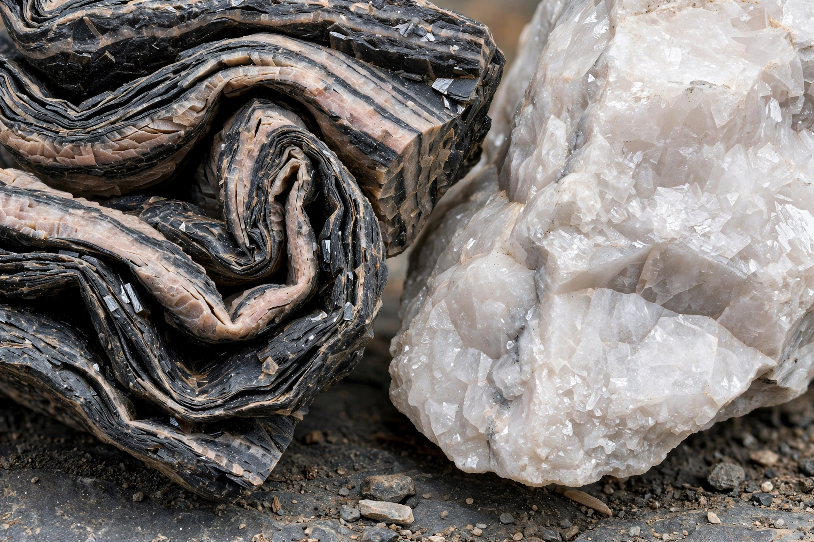

Metamorphic rocks arise from the transformation of existing rock (the protolith) by heat, pressure and chemically active fluids — metamorphism — without complete melting.

Metamorphic rockFoliated rocks (slate, phyllite, schist, gneiss) show layered textures from directed pressure; non-foliated rocks (marble from limestone, quartzite from sandstone, hornfels) lack layering. See Marble, Gneiss.
Regional metamorphism occurs in mountain belts during orogeny; contact metamorphism occurs around igneous intrusions; other types include burial, hydrothermal, shock and dynamic metamorphism. Index minerals such as garnet and kyanite indicate grade. Together with igneous and sedimentary rocks, metamorphic rocks form the rock cycle.